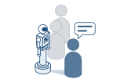
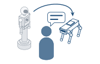
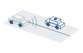
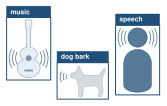
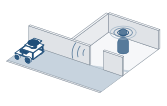
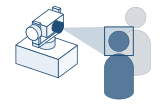
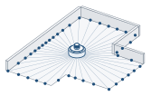
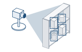
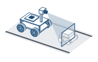

About
I build robots that hear, see, and move.
- Robot audition: At the KIST AI and Robotics Institute (Humanoid Research Center), I worked on robot audition for human-robot interaction using 4-channel microphone arrays. The work included deep-learning direction-of-arrival estimation and speech separation, tested on a humanoid robot.
- Robotics and embedded systems: I have also built ROS 2 robots with SLAM and navigation, STM32 motor-control firmware, and FPGA accelerators.
- Education: B.S. in Electrical and Electronics Engineering at Chung-Ang University, expected February 2027.
Projects
-

Sound source localization on a robot body
Speaker direction and speech separation with 4 microphones on a robot body
Code: robot-body-sound-localization, stl2bem (PyPI, DOI)
-

Localization without measured or labeled acoustic data
Body response computed from CAD and channel delays estimated from unlabeled audio, with no trained model
-

Conformal prediction for sound source localization
A region that contains the true direction with a chosen probability
-

Audiovisual sound event localization
DCASE 2026 Task 3 audiovisual track: low-threshold detection, a learned reranker, and dense mask output
-
Live captioning device
Tabletop device that labels each caption with its speaker (ROS 2, Jetson Orin Nano)
Code: live-caption-device
-
Smart indoor walker
Maps a room with LiDAR, drives to a clicked goal, and lifts its seat (ROS 2, Nav2)
Code: smart-indoor-walker
-

Generative survivor search
Disaster-site search robot: a generative model predicts unseen space from LiDAR and sound
In progress, portfolio p. 14
-

Face-tracking gimbal
Two-axis camera gimbal with closed-loop FOC firmware on an STM32
Code: tracking-gimbal-foc
-

LiDAR scan-matching accelerator
Gauss-Newton scan matching on an FPGA (Verilog, ZCU104)
-

YOLO object detection accelerator
YOLOv2 CNN accelerator on an Artix-7 FPGA (Verilog, Nexys A7-100T)
Code: yolo-fpga-accelerator
-

Lane-following car
Camera-only lane following with an offloaded detector and a course state machine (Raspberry Pi)
Code: lane-following-car